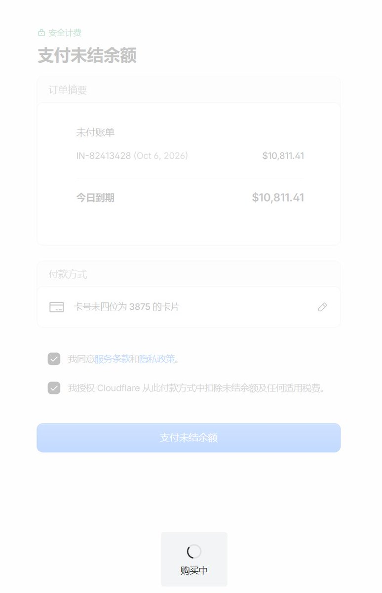
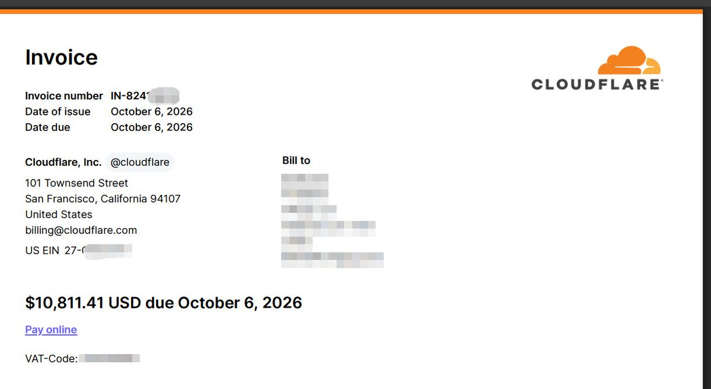
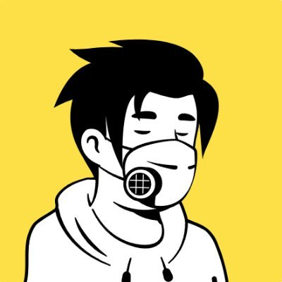

奶昔🥤
@realNyarime
@shmily7 之前学生时期，用过Vercel也是倒霉被小学生刷流量，一觉醒来欠了6k多账单。最后为了保证业务不被释放，先找别人借钱再找平台客服，不过最后也是买了教训
至于某云的Serverless计费一直有问题，很多事情他不怕你闹，就要求你妥协+删帖（怕影响）
顺带一提某云的舆情管控在各个平台都有，国内平台会投诉



浮世绘
@shmily7
最新进展：
- 已全额支付Cloudflare帐单(US$10,811.41），购买的是人生第二贵的教训
- 申请减免的工单，一直是机器人在循环回复（BTW，用的还是Moonshot的模型，你们为什么不用Claude？）
- X上和其他渠道联系Cloudflare官方人员均表示：只能帮你“看看”，仅此而已
- https://t.co/sdr7GMe5os https://t.co/OSribKnMso